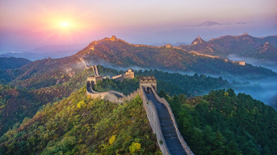

Great Wall of China

The Great Wall of China is a monumental feat of ancient engineering, stretching over 13,000 miles through rugged landscapes. This iconic structure, built over several dynasties, offers visitors a chance to step back in time and marvel at its immense scale and historical significance. Whether you explore its well-preserved sections or more remote, tranquil areas, the Great Wall provides stunning panoramic views and a sense of awe. A visit here is a must for history buffs and adventurers alike, offering both a physical and cultural journey through one of the world’s most remarkable landmarks.
Incredible journey ⭐️⭐️⭐️⭐️⭐️
"The Great Wall of China is absolutely incredible! Walking along this historic marvel gave me a deep sense of awe and appreciation for its scale and significance. The Mutianyu section was well-preserved, with breathtaking views of the rolling hills and lush greenery surrounding the wall. I recommend taking the cable car up and then walking along the wall to explore its watchtowers. Be sure to wear comfortable shoes, as some parts are quite steep. It’s one of the most iconic landmarks in the world, and visiting it is an experience I’ll never forget."
- Ryan Baker
Amazing, but overwhelming ⭐️⭐️⭐️⭐️
"The Great Wall is an amazing piece of history, but parts of the experience can be overwhelming. I visited the Badaling section, which is the most popular and therefore very crowded. While the views and architecture were stunning, navigating through the crowds made it harder to fully appreciate the site. That said, the wall itself is an engineering marvel, and the scenery is breathtaking, especially in the early morning when the mist lingers over the mountains. For a less hectic visit, I’d recommend exploring a less-touristy section like Jinshanling."
- Khaled Rajab
Nothing short of spectacular ⭐️⭐️⭐️⭐️⭐️
"Absolutely spectacular! The Great Wall exceeded all my expectations. I visited the Jinshanling section, which is a bit further out but so worth it for the peaceful atmosphere and fewer tourists. The hike was moderately challenging but manageable, with plenty of opportunities to stop and take in the stunning mountain vistas. Seeing the wall stretch endlessly into the horizon was humbling and inspiring. Make sure to bring water and a camera—this is an adventure you’ll want to remember forever! A true bucket-list destination!"
- Euan Drakeley
Recommended journey

Private All-Inclusive Day Tour with Tom Hodgson: Tiananmen Square, Forbidden City, Mutianyu Great Wall
From £166.95 per adult (price varies by group size)
Check availability